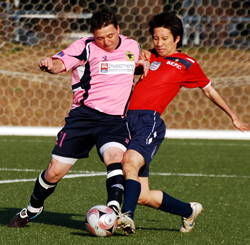
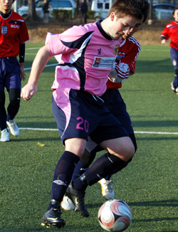
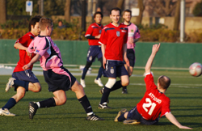
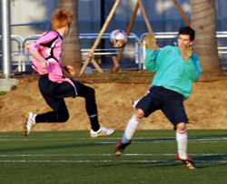

|
Setagaya Koen, Saturday 30th January.
…..............Well, not exactly, but you don't want to let the facts stand in the way of a good headline!
BEFC gave the Panthers a good game last time up, losing by just the odd goal in 5, and they weren't about to take it lying down this time around. Conditions were perfect with a clear blue sky, nice pitch at Setagaya Koen to show off our silky skills and for once, it didn't take an hour and half to get there. For most people, a short train/scooter ride, or in Rick's case, about as far as one of his monster throw-ins. Sadly, the big Kiwi was injured so sat this one out but true to the cause, he was there cheering the team on.
Usual faces for Panthers, apart from missing Sho up front, with Mark Ralph and Dan Clark filling in in central and right midfield. Dan brought along his new wife and his new “design your own” Nike trainers. Fortunately for Dan, his wife is far better looking than his Nike trainers, which appear to have escaped from Cocoa the clown's wardrobe. I think this fact must have struck Dan when he got back from the shop and realized that he had nothing that would remotely match his new footwear. Still, there was a way out of this conundrum..........all he had to do was dye his hair bright orange............yes, it's true!

Dan's fashion nightmare was only going to get worse as he pulled on his Panther's kit but with both teams lined up, we were ready to go. Pretty even opening as the teams got to grips with each other. BEFC playing two strong front men and their midfield general, Nakayama pulling the strings and not slow to take a shot from distance. Panthers were winning most of the aerial challenges in the middle of the park and with Tom and Ma linking well up front, began to create openings. A couple of dangerous corners from Matt were dealt with but then a through ball to Tom and some nifty footwork saw him round the keeper to put away the first goal. 1-0 Panthers.
If the Panthers thought this was going to be a procession, those thoughts were quickly erased as the Embassy pushed on looking for an equalizer. Matt, Phil and Andy were holding firm without too many difficult moments, and only a dodgy penalty could possibly cause them any problems. Needless to say, the dodgy penalty arrived! To be fair, Alex Babulall used his experience to draw the challenge in the area and it was one of those 50/50 decision that went against us. Alex stepped up and dispatched the penalty into the bottom corner, giving Sid no chance. 1-1 and game very much on.
Both sides were battling for supremacy in the middle of the park with neither getting a real hold of the game. Mori looked to have scored from close range following a corner but was given off-side (I think) and it seemed like things were heading for all square at half time. It's at times like this that you need a bit of inspiration, a spark of genius to break the deadlock. When you have a guy like Ma in your team, that spark is never very far away. Some days he's just in the mood for it and this was one of those days.
Route 1 football, a big punt from the keeper saw Ma pick-up the ball just inside the opposition half. He drifted past a couple of players, side stepped another and rifled a shot into the top corner from 25 yards out – Ma ma ma ma mia! The guy is just irresistible. 2-1 Panthers at half time.
Second half and Panthers began to assert some dominance in midfield. With Romen winning about 90% of the headers (it's all about timing) and Ben taking control of possession, Mori, Kei and Dan began to have more influence on the game in wide areas. Dan had a couple of great runs that led to free kicks on the edge of the box and good strikes from Kei and Mark were deflected from danger. Panthers needed another dose of the unexpected and it came from the boot of Ben Cordier. A ball over the top forced BEFC onto the back foot and when the ball broke to Romen he squared to Ben who sent a dipping shot from 35yards right into the top corner. Cracking goal and 3-1 Panthers.
That goal settled the Panthers and they began to play some good passing football. Dan was unlucky not to get his name on the goal sheet when one-on-one with the keeper, but credit to the Embassy who never took a backward step and were unlucky not to score from an errant back pass that Sid reacted well to. Still, the Panthers possession began to tell and a slick passing movement between Mori, ma and Dan was finished off by a cool finish from Tom. Panthers 4-1.
There was still time for the Embassy to pull a goal back when Richie Atwood took advantage of a retreating Panthers defence to fire a deflected shot into the top corner.
Final score 4-2 Panthers.
Report by Andy Vaughan
|